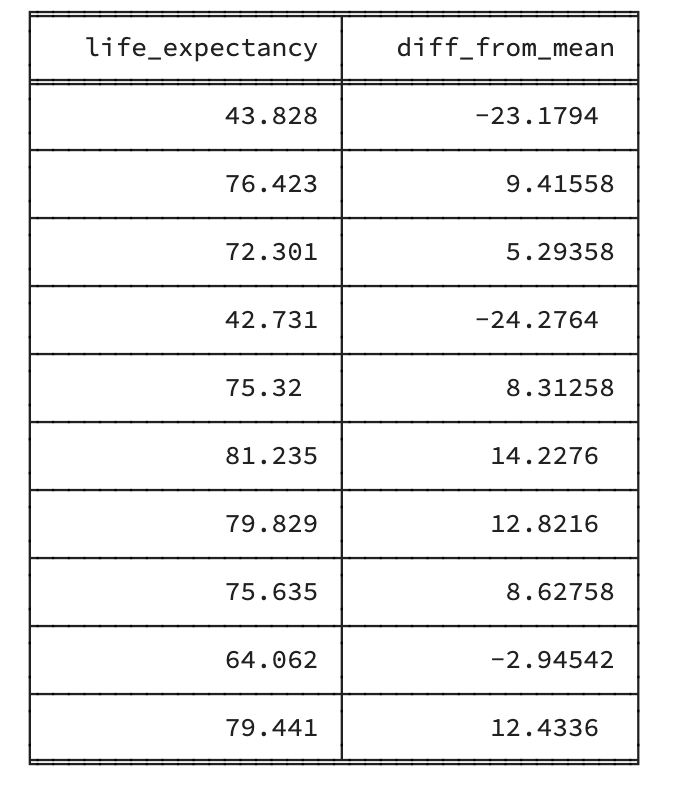
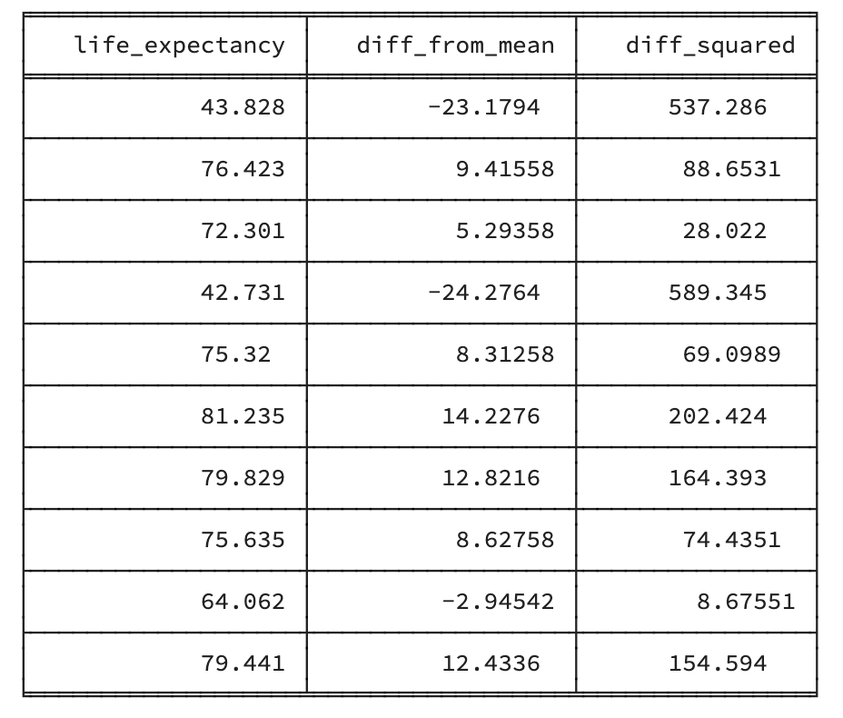
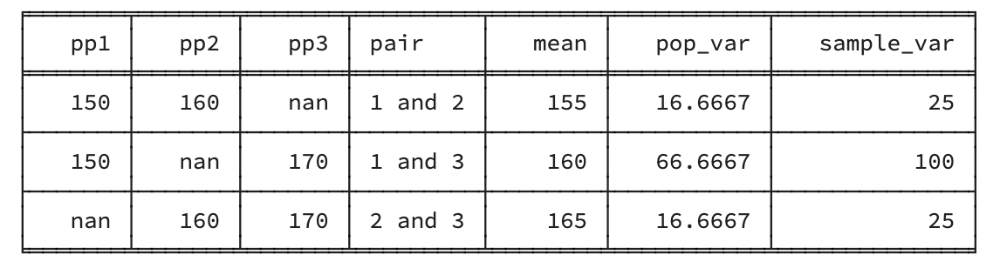

Dispersion (R,Python)
Course Overview
Red means that the page does not exist yet
Orange means that the page is started
To understand distributions such as the normal distribution, it’s helpful to clarify some more basic concepts around how data is dispersed or spread.
Range
Range simply captures the min(imum) and the max(imum) values. Lets look at the min and max for the life expectancy data from 2007:
# load the gapminder data
library(gapminder)
# create a new data frame that only focuses on data from 2007
gapminder_2007 <- subset(
gapminder, # the data set
year == 2007
)
min(gapminder_2007$lifeExp)[1] 39.613max(gapminder_2007$lifeExp)[1] 82.603# load the gapminder module and import the gapminder dataset
from gapminder import gapminder
# create a new data frame that only focuses on data from 2007
gapminder_2007 = gapminder.loc[gapminder['year'] == 2007]
gapminder_2007['lifeExp'].min()82.603gapminder_2007['lifeExp'].max()39.613So the range for life expectancy in 2007 was between 39.613 and 82.603.
Variance
Population Variance
Variance is how much the data varies around a mean. To capture this, we compare each individual’s score with the mean, so lets do this with our gapminder data’s life expectancy:
life_expectancy_variance_table <- data.frame(
life_expectancy = gapminder_2007$lifeExp,
diff_from_mean = gapminder_2007$lifeExp - mean(gapminder_2007$lifeExp)
)
rmarkdown::paged_table(life_expectancy_variance_table)import pandas as pd
from tabulate import tabulate
life_expectancy_variance_table = {
'life_expectancy' : gapminder_2007['lifeExp'],
'diff_from_mean': gapminder_2007['lifeExp']- gapminder_2007['lifeExp'].mean(),
}
# convert it to a data frame
life_expectancy_variance_table = pd.DataFrame(life_expectancy_variance_table)
# print the table
print(tabulate(life_expectancy_variance_table[:10], headers=life_expectancy_variance_table.head(), tablefmt="fancy_grid",showindex=False))
So we know for each country how different their life expectacy is to the mean life expectancy. But ideally we would like a single value to summarise variance. Lets see what would happen if we tried to summarise these differences from the mean by calculating the mean difference from the mean:
mean(life_expectancy_variance_table$diff_from_mean) [1] 5.153937e-15life_expectancy_variance_table['diff_from_mean'].mean()5.254013186958487e-15We get a number that is effectively zero (go here for an explanation about e-numbers), because all the values above the mean balance out those below the mean. So to address this, we can square the differences to force all the numbers to be positive:
life_expectancy_variance_table$diff_squared = life_expectancy_variance_table$diff_from_mean^2
rmarkdown::paged_table(life_expectancy_variance_table)life_expectancy_variance_table['diff_squared'] = life_expectancy_variance_table['diff_from_mean'].pow(2)
# print the table
print(tabulate(life_expectancy_variance_table[:10], headers=life_expectancy_variance_table.head(), tablefmt="fancy_grid",showindex=False))
If we calculate the average of this, then we get a summary of the variance that is more informative:
mean(life_expectancy_variance_table$diff_squared)[1] 144.7314life_expectancy_variance_table['diff_squared'].mean()144.73136049752028However, as mean is what you get when you add all the items together and then divide it by the number of items, this can also be done in 2 steps in R (this will help us understand the formula later):
sum_of_squares = sum(life_expectancy_variance_table$diff_squared)
this_variance = sum_of_squares/length(life_expectancy_variance_table$diff_squared)
this_variance[1] 144.7314sum_of_squares = life_expectancy_variance_table['diff_squared'].sum()
this_variance = sum_of_squares/life_expectancy_variance_table['diff_squared'].count()
this_variance144.73136049752028We can represent the above in the following formula for the population’s (remember, this is when you have everyone from the group you are measuring) variance:
\[ \sigma^2 = \frac{\sum((x_i- \bar{x}{} )^2)} {N} \]
Let’s break down each of the above symbols: σ^2 is population variance Σ is sum xi refers to the value for each participant x̄ refers to the mean for all participants N refers to the number of participants
(note that the above is written as if we’re looking at the variance of a group of participants, but the principles still work if looking at non-participant data)
Sample variance
To calculate the variance for a sample of participants, rather than every participant in the group you’re measuring, you need a slightly different formula:
\[ S^2 = \frac{\sum((x_i- \bar{x}{} )^2)} {N - 1} \] Note that Sample variance is represented by S^2 rather than σ^2
So why do we divide by N-1 rather than N? This is because the sample variance is an estimate rather than the actual population variance. When estimating the population variance you take into account the actual number of people (N) in the sample, whereas when you are estimating what happens generally in the population based on your sample, you take into account the degrees of freedom (N-1). In broad terms this reduces the risk of you under-estimating the variance of the population. You don’t necessarily need to understand degrees of freedom beyond the idea that you are controlling for the fact that you are analysing a sample rather than the population they represent, so don’t worry if the next section isn’t completely clear.
Degrees of Freedom
Degrees of freedom calculations can be useful to address statistics that are vulnerable to bias within a sample (i.e. the sample being distorted compared to the population). Interestingly, mean is not, but variance is. Lets see this by looking at differences between the population and sample for mean and variance, looking at the height of three people, and combining them into every combination of 2 people possible:
three_heights = c(150,160,170)
population_height_mean = mean(three_heights)
population_height_variance = sum((three_heights - population_height_mean)^2)/3
#sample participants in pairs
sample_heights = data.frame(
pp1 = c(150,150,NA),
pp2 = c(160,NA,160),
pp3 = c(NA,170,170),
pair = c(
"1 and 2",
"1 and 3",
"2 and 3"
)
)
sample_heights$mean = c(
mean(c(three_heights[1], three_heights[2])),
mean(c(three_heights[1], three_heights[3])),
mean(c(three_heights[2], three_heights[3]))
)
sample_heights$pop_var = c(
sum((c(three_heights[1], three_heights[2]) - mean(c(three_heights[1], three_heights[2])))^2)/3,
sum((c(three_heights[1], three_heights[3]) - mean(c(three_heights[1], three_heights[3])))^2)/3,
sum((c(three_heights[2], three_heights[3]) - mean(c(three_heights[2], three_heights[3])))^2)/3
)
sample_heights$sample_var = c(
sum((c(three_heights[1], three_heights[2]) - mean(c(three_heights[1], three_heights[2])))^2)/(3-1),
sum((c(three_heights[1], three_heights[3]) - mean(c(three_heights[1], three_heights[3])))^2)/(3-1),
sum((c(three_heights[2], three_heights[3]) - mean(c(three_heights[2], three_heights[3])))^2)/(3-1)
)
rmarkdown::paged_table(sample_heights)mean_sample_mean <- mean(sample_heights$mean)
mean_sample_variance <- mean(sample_heights$sample_var)
mean_population_variance <- mean(sample_heights$pop_var)import pandas as pd
import numpy as np
three_heights = [150,160,170]
three_heights = pd.DataFrame(three_heights)
population_height_mean = three_heights.mean()
population_height_variance = (three_heights - population_height_mean).pow(2).sum()/3
#sample participants in pairs
sample_heights = {
'pp1': [150,150, np.nan],
'pp2': [160, np.nan, 160],
'pp3': [np.nan, 170, 170],
'pair': ["1 and 2", "1 and 3", "2 and 3"]
}
sample_heights = pd.DataFrame(sample_heights)
mean = [three_heights.iloc[0:2].mean(),three_heights.iloc[[0,2],].mean(),three_heights.iloc[1:3].mean()]
mean = pd.DataFrame(mean)
sample_heights['mean']=mean
pop_var=[((three_heights.iloc[0] - three_heights.iloc[0:2].mean()).pow(2) + (three_heights.iloc[0] - three_heights.iloc[0:2].mean()).pow(2))/3,((three_heights.iloc[0] - three_heights.iloc[[0,2],].mean()).pow(2) + (three_heights.iloc[0] - three_heights.iloc[[0,2],].mean()).pow(2))/3,((three_heights.iloc[1] - three_heights.iloc[1:3].mean()).pow(2) + (three_heights.iloc[2] - three_heights.iloc[1:3].mean()).pow(2))/3]
pop_var = pd.DataFrame(pop_var)
sample_heights['pop_var']= pop_var
sample_var=[((three_heights.iloc[0] - three_heights.iloc[0:2].mean()).pow(2) + (three_heights.iloc[0] - three_heights.iloc[0:2].mean()).pow(2))/(3-1),((three_heights.iloc[0] - three_heights.iloc[[0,2],].mean()).pow(2) + (three_heights.iloc[0] - three_heights.iloc[[0,2],].mean()).pow(2))/(3-1),((three_heights.iloc[1] - three_heights.iloc[1:3].mean()).pow(2) + (three_heights.iloc[2] - three_heights.iloc[1:3].mean()).pow(2))/(3-1)]
sample_var=pd.DataFrame(sample_var)
sample_heights['sample_var']=sample_var
sample_heights = pd.DataFrame(sample_heights)
#print(markdownTable(sample_heights.to_dict(orient='records')).getMarkdown())
print(tabulate(sample_heights, headers=sample_heights.head(), tablefmt="fancy_grid",showindex=False))
mean_sample_mean = sample_heights['mean'].mean()
mean_sample_variance = sample_heights['sample_var'].mean()
mean_population_variance = sample_heights['pop_var'].mean()
When comparing the population mean to the mean sample mean (i.e., what is the typical mean for any sample), they’re identical (i.e. NOT biased):
population_height_mean[1] 160mean_sample_mean[1] 160population_height_mean
mean_sample_mean0 160.0
dtype: float64
160.0Whereas when comparing the actual population variance (population_height_variance) to the mean (to identify what is a typical) estimate of variance using the population formula that should not be used for samples (mean_population_variance) finds the estimate of variance is typically smaller than the actual variance in the population:
population_height_variance[1] 66.66667mean_population_variance[1] 33.33333population_height_variance
mean_population_variance0 66.666667
dtype: float64
33.333333333333336As this bias (almost) always underestimates the population variance, degrees of freedom is a useful correction to address this within calculations of sample variance. Lets compare the actual population height variance (population_height_variance) to the mean estimate using degrees of freedom that should be used for samples (mean_sample_variance).
population_height_variance[1] 66.66667mean_sample_variance[1] 50population_height_variance
mean_sample_variance0 66.666667
dtype: float64
50.0So, not perfect, but this is less under-representative of the variance.
One thing to bear in mind is that calculation of some statistics does not require use of the degrees of freedom to correct for bias (as seen above, mean was not susceptible to bias).
If you would like to understand how degrees of freedom are determined, and what the thinking is behind this term, read on for a brief description of this (otherwise, feel free to skip to the next section).
Degrees of freedom refers to how many values could change in your variable once you know what the outcome of the relevant statistic is. For example, if you’re interested in the variance of the height of the three people, then you only have 2 degrees of freedom, because once you know the height of 2 of the participants AND the variance of the height, then there the remaining participant only has a 2 possible heights (so their height isn’t free to change).
Standard deviation (SD)
Standard deviation is the square root of the variance. This takes into account that that the variance includes the square of the difference between the individual values and the mean:
| Population | Sample | |
|---|---|---|
| Variance | \[ \sigma^2 = \frac{\sum((x_i- \bar{x}{})\color{Black}{^2}\color{Black})} {N} \] | \[ S^2 = \frac{\sum((x_i- \bar{x}{} )\color{Black}{^2}\color{Black})} {N - 1} \] |
| SD | \[ \sigma = \sqrt\frac{\sum((x_i- \bar{x}{})\color{Black}{^2}\color{Black})} {N} \] | \[ S = \sqrt\frac{\sum((x_i- \bar{x}{} )\color{Black}{^2}\color{Black})} {N - 1} \] |
Question 1
True or False: Using degrees of freedom (N-1) rather than N controls for bias
Question 2
Which of the following can be negative?